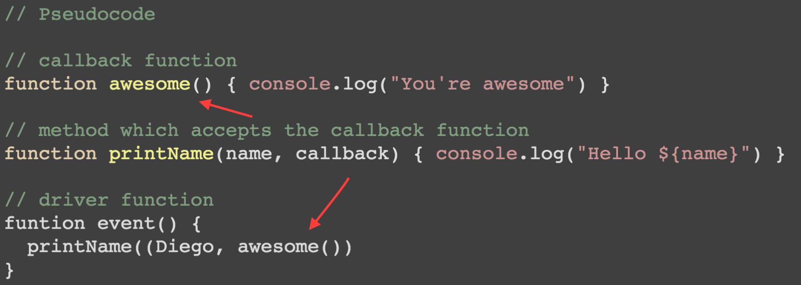

Javascript
is single threaded
Callbacks (Aka Asyncronous Script)

Take Away
- Event's are great for things that can happen multiple times on the same object.
- Callbacks can be used for simple functions, but can get our of hand quickly.
- Promises are better in the sense that it is more composeable. (Can be combined into multiple promises together).